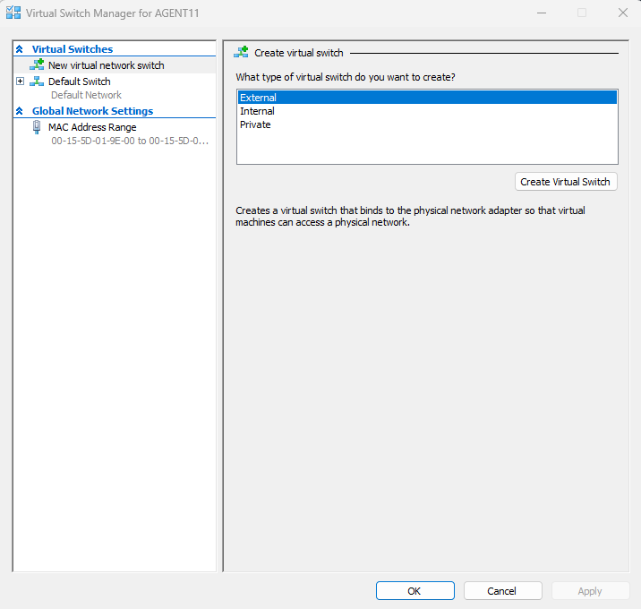

Virtual Switch Setup
A step-by-step walkthrough of creating and configuring a Virtual Switch in Hyper-V using Hyper-V Manager. All screenshots below follow the exact order of the setup process.
Virtual Switch Configuration Workflow
The following screenshots demonstrate the complete workflow for creating an External virtual switch type in Hyper-V, going over intial vSwitch creation in the Hyper-V Virtual Switch Manager, vSwitch types, network adapter selection, overall vSwitch configuration, applying settings, and assigning VMs to the vSwitch.
Here an External vSwitch type is selected for this configuration.
In this example, I'm selecting the machines Ethernet adapter.
The check box "Allow management operating system to share this network adapter", allows each VM to use the Ethernet adapters DNS/DHCP settings to obtain IP configurations.